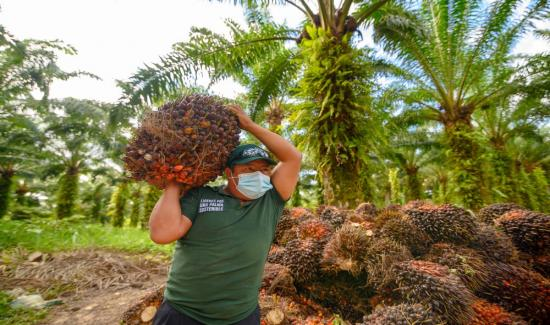

Actualidad nacional
Revisa los acontecimientos más importantes que se desarrollan en las diferentes regiones del Perú.
Leer más

Palmagro, empresa con operaciones en Ucayali, planea impulsar inversiones para ampliar sus áreas destinadas al cultivo de palma aceitera. ¿Qué proyecto tiene en cartera?
Leer noticia completa
Revisa los acontecimientos más importantes que se desarrollan en las diferentes regiones del Perú.
Leer más
Resultados, novedades y toda la información del deporte nacional e internacional.
Leer más
Las últimas novedades del mundo del cine, música, televisión y entretenimiento.
Leer más